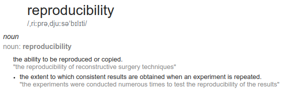
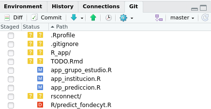
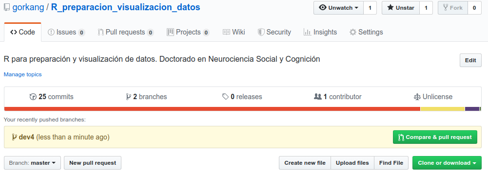
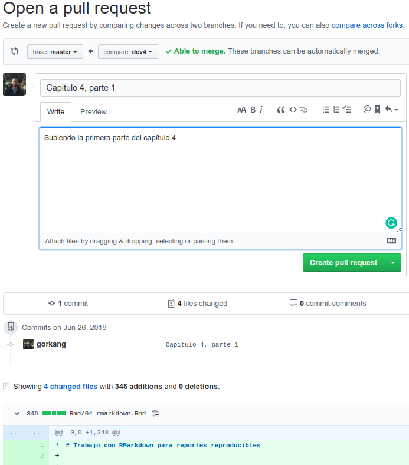
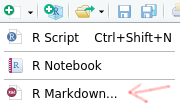
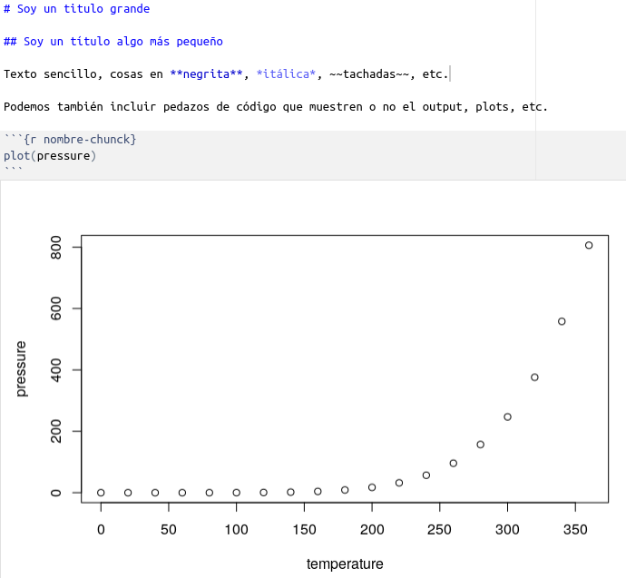
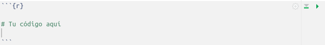

Capítulo 4 Trabajo con RMarkdown para reportes reproducibles
if (!require('corrr')) install.packages('corrr'); library('corrr')
# if (!require('easystats')) remotes::install_github("easystats/easystats"); library('easystats')
if (!require('correlation')) remotes::install_github("easystats/correlation"); library('correlation')
if (!require('report')) remotes::install_github("easystats/report"); library('report')
if (!require('papaja')) remotes::install_github("crsh/papaja"); library('papaja')
if (!require('remotes')) install.packages('remotes'); library('remotes')
if (!require('renv')) remotes::install_github("rstudio/renv"); library('renv')
if (!require('rticles')) install.packages('rticles'); library('rticles')
if (!require('stargazer')) install.packages('stargazer'); library('stargazer')
if (!require('tidyverse')) install.packages('tidyverse'); library('tidyverse')Dependencias
-
- Windows: https://happygitwithr.com/install-git.html#install-git-windows
- “Adjusting your PATH environment”, selecciona “Git from the command line and also from 3rd-party software”
- Windows: https://happygitwithr.com/install-git.html#install-git-windows
Instalar latex:
if (!require('tinytex')) install.packages('tinytex'); library('tinytex')
# Instalar distribución latex automáticamente (llevará un rato)
tinytex::install_tinytex()4.1 Que es la reproducibilidad

La crisis de replicación (replication crisis) se inició con un paper que trató de replicar los resultados de 100 investigaciones clásicas. Esta crisis ha generado un movimiento muy interesante dentro de las Ciencias Sociales y la Psicología en particular. Cada vez es más común aplicar algunos principios de buenas prácticas como compartir materiales, datos y scripts de análisis, para que tanto los revisores como otros investigadores puedan entender, reanalizar, etc. nuestras investigaciones.
Hay algunas organizaciones que han surgido para tratar de mejorar la colaboración, transparencia, y manera de trabajar:
Y algunas prácticas y maneras de publicar “nuevas”, se están haciendo cada vez más imprescindibles:
En este capítulo vamos a ver algunos pasos fundamentales para tender un workflow que permita y ayude a la reproducibilidad.
4.2 Proyectos de R-Studio
El primer paso empieza por crear un proyecto de RStudio. Al usar proyectos, simplificamos varias cosas, haciendo automáticamente más fácil compartir nuestro trabajo con otras personas. Podéis leer algo más sobre esto aquí.
4.3 Control de cambios con Git y Github
Un segundo elemento que nos va a ayudar a trabajar en equipo, y a evitar problemas en proyectos relativamente complejos es el uso de un sistema de control de versiones como Git. Los proyectos de RStudio hacen especialmente sencillo usar Git, click, click, click…
Algunas referencias útiles:
En esta sección podemos ver algunos comandos básicos asociados a workflows bien sencillos.
4.3.1 Github
github.com es una plataforma web muy popular donde almacenar proyectos de programación. Muchos de los paquetes de R, el mismo RStudio, etc, tienen repositorios abiertos en Github. Una de las ventajas fundamentales de usar Github es que esta plataforma integra algunas herramientas para hacer más sencillo el control de versiones, como el pull request, que nos permite combinar ramas de proyectos sin apenas problemas.

Github tiene un programa especial para estudiantes:
4.3.1.1 Seguir repositorios
Algo maravilloso de Github es que muchos de los paquetes que usamos se desarrollan abiertamente en la plataforma, lo que nos permite poder seguir su desarrollo, abrir Issues cuando encontramos algun problema, etc.
Por ejemplo, ¿recuerdan el paquete esquisse? Recientemente salió la versión 2.0 que usamos en la primera sesión?
Si queremos mantenernos al dia sobre algun paquete, recibir notificaciones cuando salen nuevas versiones, o simplemente marcarlo con una estrellita para no olvidarnos de su existencia, Github nos puede ayudar:
SOURCE: www.github.com
4.3.2 Clonar un repositorio existente
Algo que podemos hacer con todos los repositorios de Github es clonarlos localmente:
En RStudio:
- File > New Project > Version Control > Git
Pega en “repository URL” la URL del repo GitHub (ver imagen de abajo). Será algo similar a https://github.com/VUESTRO_NOMBRE_DE USUARIO/NOMBRE_REPO.git
SOURCE: www.github.com
4.3.3 Crear Git y asociar a Github repo
Versión simple
En www.github.com:
Creamos repositorio nuevo
Initialize this repository with a README
Clonar repositorio
Usando el terminal
Para prepararnos para usar Git y Github tenemos que hacer lo siguiente:
Crear local git repo:
usethis::use_git()(cuando creamos un repositorio Git localmente, se crea una carpeta oculta llamada .git)Crear Github Token:
usethis::browse_github_token()Insertar token en .Renvirom:
usethis::edit_r_environ()Crear Github repo:
usethis::use_github()
- Empujar el repositorio local a Github:
git push --set-upstream origin master
4.3.4 Ejercicio Git-Github
Haz lo siguiente:
Crea un proyecto de RStudio
Abre una cuenta en Github! o haz login
Sigue los pasos de arriba para crear un repositorio publico y asociarlo a un repositorio local
4.3.5 Workflow
Hay diferentes filosofias sobre cual es la mejor manera de trabajar con Git.
En este post por Vincent Driessen podeis ver una explicación bien detallada, complementada con imagenes como la que se ve a continuación.

{kind=link}
El modelo básico implica la existencia de dos ramas. Una master (“producción”), que siempre debe funcionar, y una develop (para desarrollo), donde experimentamos, rompemos cosas, etc.
Podeis ver un manual super completo llamado Happy Git and GitHub for the useR elaborado por Jenny Bryan, Jim Hester, entre otros.
4.3.5.1 Modelo básico
En RStudio podemos trabajar gráficamente, como se ve abajo, o usando el Terminal:

Usando el entorno gráfico, o el terminal
Empezamos en la rama master:
- Pull : nos aseguramos que nuestro repositorio local esta actualizado
git pull
- Branch : Creamos nueva rama llamada development
git checkout -b development
Hacemos cambios en nuestros scripts
- Commit : Commiteamos los cambios
- Añadimos archivos:
git add foo.txt
- Hacemos el commit:
git commit --message "A commit message"
- Push
 : subimos la rama a Github
: subimos la rama a Github
git push origin development
- Pull request (En Github):
- Compare & Pull request
- 2 branches, Pull request
- Pull : nos aseguramos que nuestro repositorio local esta actualizado
git pull
4.3.5.2 Pull request en 3 + 1 sencillos pasos
Después de hacer el push de arriba, al entrar en nuestro repositorio deberíamos ver algo parecido a lo siguiente (si no lo vemos, ir a branches).
Lo más dificl será hacer click en los botones verdes adecuados:
Paso 1. Compare & pull request

Paso 2. Create pull request

Paso 3. Merge pull request y confirmar

- Borrar rama antigua
4.3.6 Ejercicio Nuestro primer commit
Usando el proyecto de RStudio de antes, crea una rama nueva llamada development
Crea un nuevo archivo en formato .Rmd:

Haz un commit de ese archivo y subelo (push) a Github (asegurate que esta allá!). No olvides hacer un pull!
Ahora haz cambios en el archivo, commitealos, súbelos, y sincroniza tu repo local
4.3.6.1 Feature branch
Para la versión más razonable deberiamos tener partir con las siguientes ramas:
- master
- development
Queremos implementar un nuevo feature o arreglar algun problema:
Creamos nueva rama (localmente feature_x)
git checkout -b feature_x- Hacemos cambios
- Vemos que cambios hay:
git status, o las diferencias exactasgit diff
- Commiteamos los cambios:
- Añadimos archivos:
git add foo.txt
- Hacemos el commit:
git commit --message "A commit message"
- Añadimos archivos:
Ahora viene lo bueno… opción sencilla:
3a. Subimos la rama a Github, donde podremos hacer un Pull request:
- git push origin feature_x
- Si todo ha ido bien, borramos la rama feature_x: git branch -d feature_x
La opción menos sencilla:
3b. Si no esperamos conflictos - mergeamos rama a developmentm para poder probar que todo funciona bien.
git checkout development
git pull origin development --ff-only
git merge feature_x
git push origin development
4.3.6.2 Stash
Hemos hecho algunos cambios pero no queremos hacer commit:
git stash
Recuperamos los cambios
git checkout rama_en_la_que_recuperar_cambios
git stash apply
Queremos destruir el stash
git stash drop
4.4 RMarkdown, openscience y análisis reproducibles
RMarkdown es un tipo de archivo que nos permite combinar texto formateado con código y resultados en un mismo documento (HTML, PDF, WORD…).
Aprovechando la potencia de este tipo de archivo, algunas personas han creado paquetes para preparar artículos en formato APA, o con las plantillas de decenas de editoriales.
4.5 Sintaxis, chunks de código, tipos de archivo
La sintáxis básica de RMarkdown es sorprendentemente sencilla, como se puede ver más abajo. Eso si, lo que hay detrás es toda la potencia de latex, así que el cielo es el límite.

Y como no, tenemos mucha ayuda:
Resumiendo, tienes tres elementos básicos:
4.5.1 Cabecera YAML
Cuando creas un documento .Rmd nuevo verás algo similar a lo siguiente en las primeras lineas:
---
title: "Untitled"
author: "G"
date: "6/1/2019"
output: pdf_document
---Esta es la cabecera YAML, en la cual se le pueden pasar parámetros para añadir un índice, cambiar formato, y muchas otras cosas.
4.5.2 Rmarkdown
En el resto del documento (con la excepción de los chunks de código), el formato que usaremos será Rmarkdown. Su sintaxis es muy sencilla pero nada tolerante. Podéis ver las bases en la R Markdown cheatsheet.
IMPORTANTE. Si algo no funciona como esperas:
- Añade saltos de linea entre parrafos.
- Añade dos espacios al final de las líneas.
- Añade un espacio despues de #:
- MAL: #Título grande
- BIEN: # Título grande
- MAL: #Título grande
4.5.3 Chunks de código
Los chunks de código están delimitados por:

En su interior, puedes usar código R como si estuvieras en un script de R normal.
En la cabecera puedes añadir opciones. Hay una cantidad apabullante de opciones. Por ejemplo, en el siguiente chunk:
{r nombre_chunk, eval=TRUE, include=TRUE, fig.height=10, fig.width=12, message=FALSE, warning=FALSE, cache=TRUE, results='asis'}
eval=TRUE: Muestra el códigoinclude=TRUE: Corre el códigofig.height=10: altura de los plots (en inches)fig.width=12: ancho de los plots (en inches)message=FALSE: NO muestres mensajeswarning=FALSE: NO muestres warningscache=TRUE: cachea el output del plotresults='asis': muestra el output tal cual (importante cuando el output es en latex/pdf)
Haciendo click en la herramienta de la derecha puedes controlar varios parametros esenciales.
4.5.4 Ejercicio básico RMarkdown
Volvamos al archivo .Rmd que creamos antes. Hagamos lo siguiente:
- Dale formato de artículo científico, creando las siguientes secciones:
- Title
- Abstract
- Introducción
- Materials and Methods
- Participants
- Materials
- Results
- Experiment 1
- Experiment 2
- Discussion
- Bibliography
Pon texto de relleno dentro de cada sección. Para ello puedes usar la función
stri_rand_lipsum()del paquete {stringi}.Renderiza tu documento en formato PDF.
Pull, Commit, Push, Pull…
4.5.5 Herramientas básicas para investigadoras/es
De manera relativamente sencilla podemos incluir tablas bonitas en los reportes.
if (!require('corrr')) install.packages('corrr'); library('corrr')
if (!require('correlation')) remotes::install_github("easystats/correlation"); library('correlation')
if (!require('knitr')) install.packages('knitr'); library('knitr')
if (!require('papaja')) remotes::install_github("crsh/papaja"); library('papaja')
if (!require('report')) remotes::install_github("easystats/report"); library('report')
if (!require('stargazer')) install.packages('stargazer'); library('stargazer')
if (!require('tidyverse')) install.packages('tidyverse'); library('tidyverse')4.5.5.1 Correlaciones
4.5.5.1.1 Test de correlación
# https://github.com/easystats/easystats
corr_test = cor.test(iris$Sepal.Width, iris$Sepal.Length, method = "spearman")
report(corr_test)## The Spearman's rank correlation rho between iris$Sepal.Width and iris$Sepal.Length is negative, significant and small (rho = -0.17, p < .05). table_easystats = report(corr_test) %>% to_table()
knitr::kable(table_easystats)| Parameter1 | Parameter2 | rho | S | p | Method |
|---|---|---|---|---|---|
| iris$Sepal.Width | iris$Sepal.Length | -0.1667777 | 656283.3 | 0.041368 | Spearman |
4.5.5.1.2 Tabla de correlaciones
# https://paulvanderlaken.com/2018/09/10/simpler-correlation-analysis-in-r-using-tidyverse-principles/
table <- iris %>%
correlation() %>%
report() %>%
to_table(full = TRUE)
# Cambiamos todos los NA por ""
table_clean = table %>%
mutate_if(is.character, ~replace(., is.na(.), ""))
# Mostramos la tabla bonita (función kable del paquete {knitr})
knitr::kable(table_clean)| Parameter | Sepal.Width | Sepal.Length | Petal.Length |
|---|---|---|---|
| Sepal.Length | r = -0.12, 95% CI [-0.27, 0.04], p > .1 | ||
| Petal.Length | r = -0.43, 95% CI [-0.55, -0.29], p < .001*** | r = 0.87, 95% CI [0.83, 0.91], p < .001*** | |
| Petal.Width | r = -0.37, 95% CI [-0.50, -0.22], p < .001*** | r = 0.82, 95% CI [0.76, 0.86], p < .001*** | r = 0.96, 95% CI [0.95, 0.97], p < .001*** |
4.5.5.2 LM
model_lm <- lm(Sepal.Length ~ Petal.Length * Petal.Width, data = iris)
summary_lm = summary(model_lm)
# papaja::apa_print.summary.lm(summary_lm)$table
table_lm = papaja::apa_print.lm(model_lm)$table
knitr::kable(table_lm)| predictor | estimate | ci | statistic | p.value |
|---|---|---|---|---|
| Intercept | 4.58 | \([4.36\), \(4.80]\) | 40.89 | < .001 |
| Petal Length | 0.44 | \([0.31\), \(0.57]\) | 6.74 | < .001 |
| Petal Width | -1.24 | \([-1.67\), \(-0.81]\) | -5.65 | < .001 |
| Petal Length \(\times\) Petal Width | 0.19 | \([0.12\), \(0.25]\) | 5.62 | < .001 |
report(model_lm, standardize = "robust")## We fitted a linear model to predict Sepal.Length with Petal.Length and Petal.Width. The model's explanatory power is substantial (R2 = 0.81, adj. R2 = 0.80). The model's intercept is at 4.58.
##
## Within this model:
## - Petal.Length is significant (beta = 0.44, 95% CI [0.31, 0.57], p < .001) and large (std. beta = 1.42).
## - Petal.Width is significant (beta = -1.24, 95% CI [-1.67, -0.81], p < .001) and small (std. beta = -0.49).
## - Petal.Length:Petal.Width is significant (beta = 0.19, 95% CI [0.12, 0.25], p < .001) and small (std. beta = 0.31). report(model_lm, standardize = "robust") %>% to_fulltext()## We fitted a linear model (using OLS algorithm) to predict Sepal.Length with Petal.Length and Petal.Width (formula = Sepal.Length ~ Petal.Length * Petal.Width). Effect sizes were labelled following Cohen's (1988) recommendations. The model explains a not significant and substantial proportion of variance (R2 = 0.81, F(, ) = , p , adj. R2 = 0.80). The model's intercept, corresponding to Petal.Length = 0 and Petal.Width = 0, is at 4.58 (t(146) = 40.89, 95% CI [4.36, 4.80], p < .001).
##
## Within this model:
## - Petal.Length is positive, significant (beta = 0.44, SE = 0.07, t(146) = 6.74, 95% CI [0.31, 0.57], p < .001) and large (std. beta = 1.42, std. SE = 0.14, std. 95% CI [1.14, 1.71]).
## - Petal.Width is negative, significant (beta = -1.24, SE = 0.22, t(146) = -5.65, 95% CI [-1.67, -0.81], p < .001) and small (std. beta = -0.49, std. SE = 0.14, std. 95% CI [-0.76, -0.21]).
## - Petal.Length:Petal.Width is positive, significant (beta = 0.19, SE = 0.03, t(146) = 5.62, 95% CI [0.12, 0.25], p < .001) and small (std. beta = 0.31, std. SE = 0.05, std. 95% CI [0.20, 0.41]). table_easystats = report(model_lm, standardize = "robust") %>% to_table()
knitr::kable(table_easystats)| Parameter | beta | CI_low | CI_high | p | Std_beta | Fit |
|---|---|---|---|---|---|---|
| (Intercept) | 4.5771709 | 4.3559149 | 4.7984269 | 0e+00 | -0.2931027 | NA |
| Petal.Length | 0.4416762 | 0.3122070 | 0.5711453 | 0e+00 | 1.4237590 | NA |
| Petal.Width | -1.2393154 | -1.6728668 | -0.8057640 | 1e-07 | -0.4884181 | NA |
| Petal.Length:Petal.Width | 0.1885887 | 0.1222389 | 0.2549386 | 1e-07 | 0.3064497 | NA |
| NA | NA | NA | NA | NA | NA | NA |
| R2 | NA | NA | NA | NA | NA | 0.8078020 |
| R2_adjusted | NA | NA | NA | NA | NA | 0.8038527 |
Usando el paquete {stargazer} podemos mostrar una tabla de resultados:
stargazer::stargazer(model_lm, heather = FALSE, type = "html")| Dependent variable: | |
| Sepal.Length | |
| Petal.Length | 0.442*** |
| (0.066) | |
| Petal.Width | -1.239*** |
| (0.219) | |
| Petal.Length:Petal.Width | 0.189*** |
| (0.034) | |
| Constant | 4.577*** |
| (0.112) | |
| Observations | 150 |
| R2 | 0.808 |
| Adjusted R2 | 0.804 |
| Residual Std. Error | 0.367 (df = 146) |
| F Statistic | 204.544*** (df = 3; 146) |
| Note: | p<0.1; p<0.05; p<0.01 |
| FALSE |
4.5.5.3 Anova
- Ver paquete {eANOVA}
data <- iris
data$Cat1 <- rep(c("X", "X", "Y"), length.out = nrow(data))
data$Cat2 <- rep(c("A", "B"), length.out = nrow(data))
model_aov <- aov(Sepal.Length ~ Species * Cat1 * Cat2, data=data)
report(model_aov)## The ANOVA suggests that:
##
## - The effect of Species is significant (F(2, 138) = 115.28, p < .001) and can be considered as large (partial omega squared = 0.60).
## - The effect of Cat1 is not significant (F(1, 138) = 0.01, p > .1) and can be considered as very small (partial omega squared = -0.01).
## - The effect of Cat2 is not significant (F(1, 138) = 0.01, p > .1) and can be considered as very small (partial omega squared = -0.01).
## - The interaction between Species and Cat1 is not significant (F(2, 138) = 0.51, p > .1) and can be considered as very small (partial omega squared = -0.01).
## - The interaction between Species and Cat2 is not significant (F(2, 138) = 0.94, p > .1) and can be considered as very small (partial omega squared = -0.00).
## - The interaction between Cat1 and Cat2 is not significant (F(1, 138) = 0.91, p > .1) and can be considered as very small (partial omega squared = -0.00).
## - The interaction between Species, Cat1 and Cat2 is not significant (F(2, 138) = 0.13, p > .1) and can be considered as very small (partial omega squared = -0.01). report(model_aov) %>% to_table()## Parameter Sum_Squares DoF Mean_Square F
## 1 Species 63.212133333 2 31.606066667 1.152760e+02
## 2 Cat1 0.002629532 1 0.002629532 9.590623e-03
## 3 Cat2 0.001666667 1 0.001666667 6.078790e-03
## 4 Species:Cat1 0.277538654 2 0.138769327 5.061297e-01
## 5 Species:Cat2 0.513737669 2 0.256868834 9.368710e-01
## 6 Cat1:Cat2 0.250794779 1 0.250794779 9.147172e-01
## 7 Species:Cat1:Cat2 0.073353942 2 0.036676971 1.337710e-01
## 8 Residuals 37.836478758 138 0.274177382 NA
## p Omega_Squared_partial
## 1 3.658009e-30 0.6037532091
## 2 9.221286e-01 -0.0066466150
## 3 9.379676e-01 -0.0066703400
## 4 6.039388e-01 -0.0066285856
## 5 3.943298e-01 -0.0008424293
## 6 3.405383e-01 -0.0005688752
## 7 8.749037e-01 -0.0116846753
## 8 NA NA table_aov = papaja::apa_print.aov(model_aov)$table
knitr::kable(table_aov)| Effect | F | df1 | df2 | MSE | p | ges |
|---|---|---|---|---|---|---|
| Species | 115.28 | 2 | 138 | 0.27 | < .001 | .626 |
| Cat1 | 0.01 | 1 | 138 | 0.27 | .922 | .000 |
| Cat2 | 0.01 | 1 | 138 | 0.27 | .938 | .000 |
| Species \(\times\) Cat1 | 0.51 | 2 | 138 | 0.27 | .604 | .007 |
| Species \(\times\) Cat2 | 0.94 | 2 | 138 | 0.27 | .394 | .013 |
| Cat1 \(\times\) Cat2 | 0.91 | 1 | 138 | 0.27 | .341 | .007 |
| Species \(\times\) Cat1 \(\times\) Cat2 | 0.13 | 2 | 138 | 0.27 | .875 | .002 |
4.5.6 Otros
Para evitar problemas con los paths de los archivos, usar
here::here()Para evitar problemas con instalación de Latex:
if (!require('tinytex')) install.packages('tinytex'); library('tinytex')
tinytex::install_tinytex()- Corregir ortografía en Rmarkdown (F7)
- https://github.com/ropensci/spelling#readme
4.5.6.1 Usar bibliografía
Bibliográfia en Rmarkdown
4.5.6.2 Citar los paquetes que usamos
¿Debemos citar los paquetes que usamos?
- Respuesta corta, si
- Respuesta larga, la mayoría de los paquetes
remotes::install_github("Pakillo/grateful")
grateful::cite_packages(all.pkg = FALSE,
out.format = "rmd",
out.dir = "dev")4.5.7 Ejercicio avanzado
Bajad la base de Cancer Screening Risk Literacy of Physicians in Training: https://osf.io/qn9a2/ y el preprint del artículo:
En el documento .Rmd de antes:
Cread algo parecido a la tabla de correlaciones (Tabla 3) que se ve en el artículo.
Tratad de emular el tipo de análisis que se ve en la Tabla 4.
4.6 De los datos al reporte final: Una historia de amor con R
devtools::install_github("crsh/papaja")
# Create new R Markdown file
rmarkdown::draft(
here::here("data", "output", "mymanuscript.Rmd"),
"apa6",
package = "papaja",
create_dir = FALSE,
edit = FALSE)
# Render manuscript
rmarkdown::render(
here::here("data", "output", "mymanuscript.Rmd"),
quiet = TRUE,
clean = TRUE)Y no olvidemos el paquete {rticles}, que contiene plantillas de decenas de editoriales
4.7 Avanzado
4.7.1 Manejo de dependencias
Usando un sistema de manejo de dependencias renv
Estos sistemas crean un snapshot de las librerías usadas actualmente. Otra alternativa es packrat:
Instalamos renv:
install.packages("remotes")
remotes::install_github("rstudio/renv")Inicializamos el entorno local de un nuevo proyecto, con una librería privada de R
renv::init()Trabajamos en el proyecto, instalando los paquetes que necesitemos
Guardamos el estado de las librerías usadas en el proyecto en un lockfile (llamado renv.lock),
renv::snapshot()Restauramos el estado de las librerías a partir del lockfile generado por renv::snapshot().
renv::restore()
4.7.2 Alternativas para integrar manejo de dependencias y control de cambios
https://jdblischak.github.io/workflowr/articles/wflow-01-getting-started.html
# install.packages("workflowr")4.8 Mas allá de Rmarkdown
Aplicaciones web interactivas con R: Shiny
4.9 Varios
4.9.1 Shortcuts!
- Alt+SHIFT+K: Ver shortcuts!
- CTRL+SHIFT+M: Pipe
- CTRL+SHIFT+A: Reformat code
- CTRL+I: Reindent lines
4.9.2 Estilo
Es importante ser consistente en la manera de escribir codigo. Habitualmente se recomienda seguir una guia de estilo. Por ejemplo, Hadley Wickham’s Style guide o la guia de estilo del tidyverse.
4.9.3 Algunos paquetes interesantes
Bibliografía
Xie, Y., Allaire, J. J., & Grolemund, G. (2018). R Markdown: The Definitive Guide. CRC Press. https://bookdown.org/yihui/rmarkdown/
Yihui Xie (2018). bookdown: Authoring Books and Technical Documents with R Markdown https://bookdown.org/yihui/bookdown/markdown-syntax.html